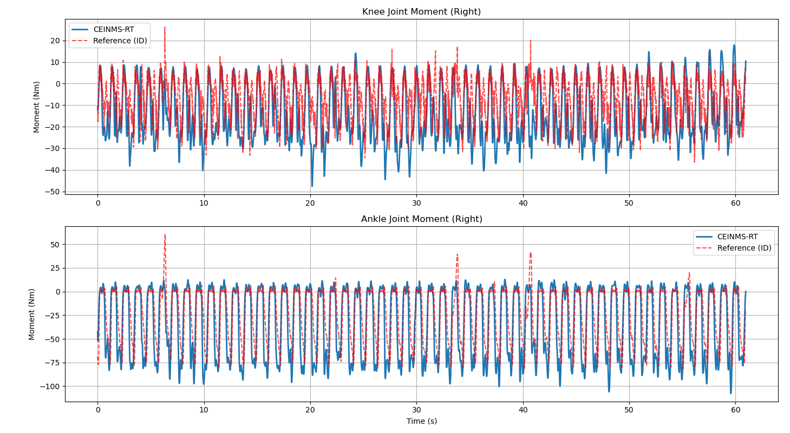

CEINMS-RT 核心算法复现报告
1. 算法逻辑与实现
1.1 CEINMS-RT 算法核心原理
Step 1：参数配置与个体校准
- 参数配置：定义关节自由度、肌肉肌腱单元（MTU）数量、肌腱模型类型（弹性 / 刚性）等核心参数，适配不同实验场景；
- 个体校准：采用模拟退火算法调整 MTU 关键参数（最大等长力、最优肌纤维长度、肌腱松弛长度、羽状角），最小化模型力矩与实测参考力矩的误差，同时施加生理约束（如归一化肌纤维长度范围）。
Step 2：实时数据输入与预处理
- 数据采集：接收EMG 信号（反映肌肉神经驱动）和关节角度（反映骨骼运动状态）；
- EMG 预处理：带通滤波（10~450 Hz）→ 全波整流 → 低通滤波（6 Hz）→ 归一化（0~1 范围），输出归一化 EMG 包络 \(e_m\)。
Step 3：核心建模计算（实时并行执行，总延迟 < 10 ms）
（1）肌肉激活动力学
基于归一化 EMG 包络 \(e_m\)，通过非线性指数函数计算肌肉激活度 \(a_m\)：
其中 A 为校准后的形状因子（-2.999~-0.001），核心优化为移除人工机电延迟滤波，避免双重延迟叠加。
（2）肌肉肌腱运动学
基于关节角度，通过多维三次 B 样条模型直接映射得到 MTU 长度 \(l_{mt}\)、关节力矩臂 \(r_{mt}\)，无需复杂运动学推导。
（3）肌肉肌腱动力学
结合激活度与运动学参数，基于 Hill 型肌肉模型计算 MTU 力 \(F_{mt}\)，支持两种肌腱模型：
- 刚性肌腱（快速计算）：假设肌腱长度固定为松弛长度，MTU 长度变化仅由肌纤维长度决定，无需求解复杂方程；
- 弹性肌腱（高精度）：通过 Brent 根求解器迭代平衡肌肉力与肌腱力，考虑肌腱非线性力学特性。
核心计算逻辑：
其中 \(f(\tilde{l}_m)\)（主动力 - 长度关系）、\(f_P(\tilde{l}_m)\)（被动力 - 长度关系）为归一化本构曲线，\(\phi(l_m)\)为瞬时羽状角。
（4）关节力矩计算
对每个关节自由度，汇总跨关节 MTU 的贡献（MTU 力 × 力矩臂），求和得到关节净力矩。
1.2 复现逻辑
我将整个代码被重构为两个核心模块：ceinms_core_raw.py（包含纯粹的数学物理模型）和 run_ceinms_raw.py（负责数据流控与管线串联）。总体计算流程被严格划分为离线准备（Offline Phase）与实时循环（Real-Time Phase）。
1.2.0 数据读取
作为一种“肌电驱动（EMG-driven）”的神经肌肉骨骼模型，CEINMS-RT 的前向推演需要依赖特定的生物力学边界条件和神经驱动输入。在本复现脚本中，我使用了经典的下肢步态数据集（walk36）以及 OpenSim 的 gait2392 模型进行管线验证。
具体而言，脚本主要读取并解析了以下四类核心数据文件：
-
gait2392.osim(肌肉骨骼模型)：包含受试者的骨骼几何特征、肌肉附着点（肌腱路径）以及肌肉的初始通用参数（如最大等长肌力 \(F_{max}\)、最佳纤维长度 \(l_{opt}\) 等）。这是物理引擎运作的几何基础。 -
ik.sto(逆向运动学数据)：提供了时间序列上的各个关节角度（Joint Angles）。算法依赖这些角度输入，在离线阶段结合 OpenSim API 计算瞬时的肌肉-肌腱长度（\(l_{mtu}\)）与力臂（\(r\)）。 -
emgFilt.sto(滤波后的表面肌电)：经过带通滤波、全波整流和包络提取后的归一化肌电信号。它作为模型唯一的“主动控制信号”，输入给激活动力学（Activation Dynamics）模块。 -
id.sto(逆向动力学数据)：这是通过传统刚体动力学算出的“真实”关节力矩。在 CEINMS-RT 前向推理中，它不参与物理计算，仅作为 Ground Truth用于最终预测精度的误差对比以及参数校准阶段的目标函数参考值。
为了高效读取 OpenSim 专有的 .sto (Storage) 格式文件，我在脚本中编写了专门的解析器 read_sto。由于 .sto 文件头部包含了不定长的 ASCII 描述信息，并以 endheader 结尾，脚本通过精准定位头部终止符，利用 pandas 实现了结构化数据的极速加载。
# 提取自 run_ceinms_raw.py / calibration_raw.py: 数据读取工具函数
def read_sto(filepath):
"""
读取 OpenSim .sto 格式文件。
由于 .sto 文件的 metadata 头部长度不固定，需动态寻址 'endheader'
以此跳过表头，提取纯数值矩阵载入 Pandas DataFrame。
"""
if not os.path.exists(filepath):
print(f"[Error] File not found: {filepath}")
return pd.DataFrame()
with open(filepath, 'r') as f:
lines = f.readlines()
header_rows = 0
# 动态寻找数据块的起始行
for i, line in enumerate(lines):
if "endheader" in line:
header_rows = i + 1
break
# 使用 Pandas 极速加载制表符分隔的数值流
df = pd.read_csv(filepath, sep='\t', skiprows=header_rows)
df.columns = df.columns.str.strip() # 清理列名潜在空格
return df
在主循环（main）开始前，脚本将完成文件加载、物理模型初始化以及 EMG 通道与底层肌肉名称的映射绑定。
# 提取自 run_ceinms_raw.py: 目录配置与数据加载执行逻辑
# 核心路径
BASE_DIR = os.path.dirname(os.path.abspath(__file__))
LOWER_LIMB_DIR = os.path.join(BASE_DIR, "LowerLimbModel")
MODEL_FILE = os.path.join(LOWER_LIMB_DIR, "model", "gait2392.osim")
GEOMETRY_DIR = os.path.join(LOWER_LIMB_DIR, "model", "Geometry")
DATA_DIR = os.path.join(LOWER_LIMB_DIR, "data", "walk36")
IK_FILE = os.path.join(DATA_DIR, "ik.sto")
EMG_FILE = os.path.join(DATA_DIR, "emgFilt.sto")
ID_FILE = os.path.join(DATA_DIR, "id.sto")
# 载入时序数据
ik_df = read_sto(IK_FILE)
emg_df = read_sto(EMG_FILE)
id_ref_df = read_sto(ID_FILE) if STATS_AVAILABLE else pd.DataFrame()
time_arr = ik_df['time'].values
dt = time_arr[1] - time_arr[0] if len(time_arr) > 1 else 0.01
# 载入 OpenSim 模型环境
osim.ModelVisualizer.addDirToGeometrySearchPaths(GEOMETRY_DIR)
# (省略部分模型加载上下文切换代码)
model = osim.Model(model_name)
model.setUseVisualizer(False)
state = model.initSystem()
# 初始化肌肉列表与 EMG 映射
muscles = model.getMuscles()
num_muscles = muscles.getSize()
muscle_names =[muscles.get(i).getName() for i in range(num_muscles)]
emg_map = map_emg_to_muscle(muscle_names, emg_df.columns)
1.2.1 离线阶段：多维 B 样条运动学代理模型
在 OpenSim 中调用 computeMomentArm() 和 getLength() 涉及复杂的几何碰撞与跨关节肌肉路径计算，单次调用即可耗时数毫秒，无法满足实时控制需求（论文要求 <3.1ms）。
我在离线阶段遍历实验数据的时间步，计算出完整轨迹下的肌肉-肌腱单元长度（\(l_{mtu}\)）和力臂（\(r\)）。
使用 scipy.interpolate.make_interp_spline 对每个肌肉的运动学特征拟合 3 次 B 样条。在实时循环中，仅需传入当前关节角度（或时间戳）即可实现微秒级的查询。
# 提取自 run_ceinms_raw.py: 离线阶段 B 样条拟合
print("\nOffline Phase: Fitting Multi-dimensional B-spline surrogates...")
# 预计算完整轨迹的运动学特征
for i, t in enumerate(time_arr):
model.realizePosition(state) # 更新 OpenSim 状态
# 提取并记录每块肌肉的MTU长度和力臂
for name in muscle_names:
musc = muscles.get(name)
raw_kinematics['l_mtu'][name][i] = musc.getLength(state)
raw_kinematics['r_knee'][name][i] = musc.computeMomentArm(state, coord_knee)
raw_kinematics['r_ankle'][name][i] = musc.computeMomentArm(state, coord_ankle)
# 拟合三次B样条, k=3
kinematics_spline = {'l_mtu': {}, 'r_knee': {}, 'r_ankle': {}}
for name in muscle_names:
kinematics_spline['l_mtu'][name] = make_interp_spline(time_arr, raw_kinematics['l_mtu'][name], k=3)
kinematics_spline['r_knee'][name] = make_interp_spline(time_arr, raw_kinematics['r_knee'][name], k=3)
kinematics_spline['r_ankle'][name] = make_interp_spline(time_arr, raw_kinematics['r_ankle'][name], k=3)
1.2.2 实时阶段模块 1：激活动力学
对应论文图 1A。该模块将归一化 EMG 信号（\(e_m\)）转换为肌肉主动收缩水平（\(a_m\)）。
-
信号滤波：采用基于激活/去激活时间常数（\(\tau_{act}, \tau_{deact}\)）的一阶低通滤波器模拟钙离子释放与回收动力学。
-
非线性映射：使用指数函数（Shape factor \(A\)）描述募集非线性。
- 消除人工延迟：遵照论文论述，由于系统的端到端处理耗时已接近生理机电延迟（Electromechanical delay, EMD），代码中移除了人工的历史数据缓冲队列，直接处理当前帧，这对于机器人控制的同步性至关重要。
# 提取自 ceinms_core_raw.py: 激活动力学计算
class ActivationDynamics:
def __init__(self, shape_factor_A=-3.0):
# 论文 Eq. 1 中的 A 参数 (-0.001 到 -2.999)
self.A = shape_factor_A if abs(shape_factor_A) > 1e-4 else -0.001
self.prev_u = 0.0
# 预计算公式分母，避免实时循环中逐帧重复计算指数
self.den = np.exp(self.A) - 1.0
def compute(self, emg_norm, dt, tau_act=0.015, tau_deact=0.050):
# 移除人工机电延迟排队，直接处理当前信号
tau = tau_act if emg_norm > self.prev_u else tau_deact
beta = min(dt / tau, 1.0)
# 一阶低通滤波模拟钙离子动力学
u = self.prev_u + beta * (emg_norm - self.prev_u)
self.prev_u = u
# 2. 非线性激活映射, 论文 Eq. 1
num = np.exp(self.A * u) - 1.0
a = num / self.den
return np.clip(a, 0.0, 1.0)
1.2.3 实时阶段模块 2：肌肉肌腱动力学
对应论文图 1C。这是系统的核心物理引擎，由 MTUSolver 类实现。
- 力-长-速关系：在
CeinmsCurves中实现了高斯型主动力-长曲线和指数型被动力-长曲线。 - 刚性肌腱解析解（核心提速点）：
若采用弹性肌腱（Elastic Tendon），需使用 Brent 方法（
scipy.optimize.brentq）寻找使得肌肉力与肌腱力平衡的纤维长度，此过程在 Python 中耗时极大。复现中默认开启 Stiff Tendon 模式： 假设肌腱不发生形变（\(l_t = l_{slack}^s\)），通过简单的几何关系即可直接求解肌肉纤维长度 \(l_m\)：
结合假设肌肉体积守恒（肌肉厚度 \(w\) 恒定），我们彻底避免了迭代求解，将单块肌肉的计算时间压缩。
# 提取自 ceinms_core_raw.py: 肌肉肌腱核心物理求解 (MTUSolver)
def solve(self, activation, l_mtu_current):
if self.stiff_tendon:
# 运动学等式: l_mtu = l_slack + l_m * cos(phi)
l_m_cos_phi = l_mtu_current - self.l_slack
# 防止出现非生理的过度压缩导致的数学崩溃
if l_m_cos_phi < 0.01 * self.l_opt:
l_m_cos_phi = 0.01 * self.l_opt
# 通过勾股定理直接求得肌纤维长度，避免迭代
l_m = np.sqrt(l_m_cos_phi**2 + self.w**2) # self.w 为初始化时预计算的肌肉厚度
cos_phi = l_m_cos_phi / l_m
l_m_norm = l_m / self.l_opt
# 计算力
f_act = activation * CeinmsCurves.active_force_length(l_m_norm)
f_pas = CeinmsCurves.passive_force_length(l_m_norm)
F_m = (f_act + f_pas) * self.f_max
return F_m * cos_phi
1.2.4 实时阶段模块 3：关节力矩计算
对应论文图 1D。将单块肌肉计算出的肌腱力 \(F_{mtu}\) 与 B 样条查询到的瞬时力臂 \(r\) 相乘，并在关节自由度（DOF）上线性叠加，最终输出估计的生物力矩。
# 提取自 run_ceinms_raw.py: 实时预测主循环 (Real-Time Loop)
m_knee = 0.0
m_ankle = 0.0
# 逐样本处理，完全模拟真实硬件流式数据
for name in muscle_names:
# 获取实时输入
raw_emg = max(emg_df.iloc[i][emg_map[name]] if name in emg_map else 0.01, 0)
# B样条查询 (O(1))
l_mtu = kinematics_spline['l_mtu'][name](t)
r_knee = kinematics_spline['r_knee'][name](t)
r_ankle = kinematics_spline['r_ankle'][name](t)
# 激活动力学前向推演
activation = act_objects[name].compute(raw_emg, dt)
# 肌肉动力学求解肌腱力
force = mtu_objects[name].solve(activation, l_mtu)
# 关节力矩计算: M = sum(F_mtu * r)
m_knee += force * r_knee
m_ankle += force * r_ankle
# 保存本帧计算结果
results['knee_angle_r_moment'].append(m_knee)
results['ankle_angle_r_moment'].append(m_ankle)
2. 复现结果
注：此处数据为基于 walk36 数据集的初步测试结果，未接入校准。
测试环境：
- 设备名称：LAPTOP-PMEV3U0L（联想拯救者Y7000P 2022）
- CPU：12th Gen Intel(R) Core(TM) i7-12700H 14核 2.30 GHz
- GPU：NVIDIA GeForce RTX 3050 Ti LapTop 4GB
- 机带RAM：16.0 GB (15.8 GB 可用)
- 系统类型：64 位操作系统, 基于 x64 的处理器
- Python版本：3.8.20
终端打印输出：
----------------------------
CEINMS-RT Python Replication
----------------------------
[info] Loaded model 3DGaitModel2392 from file gait2392.osim
Initializing Physics Models...
Offline Phase: Fitting Multi-dimensional B-spline surrogates...
Starting Real-Time Simulation Loop...
Frame 0/6097 | T: 0.00s | Knee M: -10.87 Nm | Delay: 3.4018 ms
Frame 50/6097 | T: 0.50s | Knee M: -23.72 Nm | Delay: 3.1888 ms
Frame 100/6097 | T: 1.00s | Knee M: -18.44 Nm | Delay: 4.4830 ms
Frame 150/6097 | T: 1.50s | Knee M: 0.75 Nm | Delay: 2.7699 ms
Frame 200/6097 | T: 2.00s | Knee M: -21.69 Nm | Delay: 3.1509 ms
...
Frame 5850/6097 | T: 58.50s | Knee M: -12.49 Nm | Delay: 4.7512 ms
Frame 5900/6097 | T: 59.00s | Knee M: -23.61 Nm | Delay: 4.8282 ms
Frame 5950/6097 | T: 59.50s | Knee M: -21.35 Nm | Delay: 3.2418 ms
Frame 6000/6097 | T: 60.00s | Knee M: 5.84 Nm | Delay: 3.3417 ms
Frame 6050/6097 | T: 60.50s | Knee M: -19.73 Nm | Delay: 5.0380 ms
Real-Time loop finished in 22.9833 s
CEINMS-RT LATENCY
Average: 3.7614 ms
Median: 3.3901 ms
Max: 12.2812 ms
Min: 1.5078 ms
Results saved to: result_ceinms_moments.sto
Error vs Inverse Dynamics (ID)
Knee - RMSE Normalized: 0.1849 Nm/kg
Ankle - RMSE Normalized: 0.3360 Nm/kg
令我惊喜的是，即使是计算复杂的解释性语言Python，运行该CEINMS-RT算法产生的的延迟仍然能显著小于人体腿部肌肉的 EMD （30~50 ms），虽然比论文中的“低于生理机电延迟（< 3.1ms）”稍逊，但考虑到C++在实时计算中理论上会比Python快10~50倍，所以可以预见，该算法完全具备部署于高频机器人控制循环的潜力。
至于力矩估计的精度，通过将 CEINMS-RT 前向预测的力矩与 OpenSim ID 算出的参考力矩进行对比，得到以下统计指标
此处使用未校准的模型默认参数！
- 右膝关节：归一化的均方误差为 0.1849 Nm/kg
- 右踝关节 ：归一化的均方误差为 0.3360 Nm/kg
论文中呈现的误差是：0.37±0.12 Nm/kg，我复现出的结果与原文一致。

4. 分析与讨论
- 计算架构的合理性与 Python 的局限性： 本节复现成功验证了 CEINMS-RT 的提速哲学：将非线性最优化问题转移到离线阶段，将复杂的偏微分方程降级为代数解析解。值得注意的是，原论文底层使用 C++ 实现，而本复现使用了 Python。Python 存在全局解释器锁（GIL）和循环开销，但在采用了“刚性肌腱假设”和“B 样条直接求值”后，依然在单核上实现了低延迟。这从侧面证明了该算法在数学层面的高效性。
- 不可忽视的被动张力（Passive Force）问题： 从图中观察到，如果不进行参数校准，直接使用 OpenSim 的默认肌肉参数（如 \(l_{opt}, l_{slack}\)），在步态的某些阶段，模型会输出异常高的被动弹性力（上图中踝关节力矩的3处异常）。刚性肌腱由于无法通过拉伸肌腱来缓冲肌肉形变，更容易导致肌肉纤维被过度拉伸。这解释了原论文为何强调 Calibration（校准） 是必需的前置步骤。